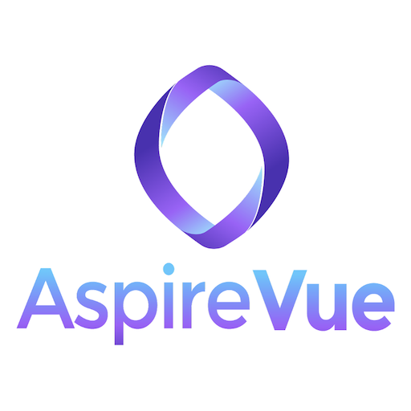

AspireVue V4 — 30-Day Systems Architecture Engagement
SOW-2026-04-29 • Prepared by Arc'kin Endeavors • mike@arckin.io
| Service Provider | Arc'kin Endeavors · Michael Landi · mike@arckin.io |
| Client | AspireVue V4 · Larry Kuhn |
This agreement covers a 30-day systems architecture engagement in which Arc'kin Endeavors (Service Provider) will build and configure an operating stack for AspireVue V4 (Client). Scope, phases, milestones, and payment terms are defined below. The full narrative context for this engagement lives in the proposal document at mvae-arc.github.io/aspirevue-wave1/proposal/ — that document is not a contract and is not incorporated by reference, but it accurately describes the work.
| Term | 30 days from signed start date |
| Total Investment | $8,500 |
| Payment 1 | $4,250 at engagement start (signed SOW, countersigned) |
| Payment 2 | $4,250 at Milestone B (Day 22) — triggers on observable deliverable, not calendar |
| Cancellation | Anytime after Week 1 with written notice; prorated refund of any unstarted milestone work |
| Phase | Days | Scope |
|---|---|---|
| Phase 1 — Stack Foundation and Capture Loop | 1–10 | Mac Studio M2 operating configuration, capture layer (Plaud integration), synthesis layer (Obsidian vault architecture and AI synthesis pipeline) |
| Phase 2 — Workflow Fluency and Asset Production | 11–22 | Three repeatable workflows built to Client's patterns, agentic surface integration, team visibility surface |
| Phase 3 — Codification and Handoff Readiness | 23–30 | System documentation (Client-authored, Provider-edited), failure-mode coverage, renewal decision gate |
| Milestone | Day | Outcome | Payment Event |
|---|---|---|---|
| A | Day 10 | Client runs full capture-to-vault cycle unassisted while Provider observes. Gates Phase 2. | None |
| B | Day 22 | Client ships one structured intellectual asset produced end-to-end through the stack, team-readable, with no production assistance from Provider. | Triggers second $4,250 payment |
| C | Day 30 | Engagement closes. Renewal decision at Day 30 retrospective. | None |
Either party may close this engagement at any time after Week 1 by providing written notice to the other party. Upon cancellation, the Service Provider will issue a prorated refund of any fees paid for milestone work not yet started.
The Phase 2 Extension Menu items described in the proposal (marketing asset build, design system rebrand, VC and customer-facing deliverables) are explicitly outside this engagement's scope; each requires a separate, mutually-signed add-on document before work begins.
A mutual non-disclosure agreement governing confidentiality in both directions was signed by both parties on April 18, 2026; that agreement remains in effect and is not re-executed by this document.
This Statement of Work is the binding agreement between the parties; the proposal document at mvae-arc.github.io/aspirevue-wave1/proposal/ provides narrative context and is incorporated by reference for scope descriptions only, not for payment terms or cancellation terms (which are defined above).